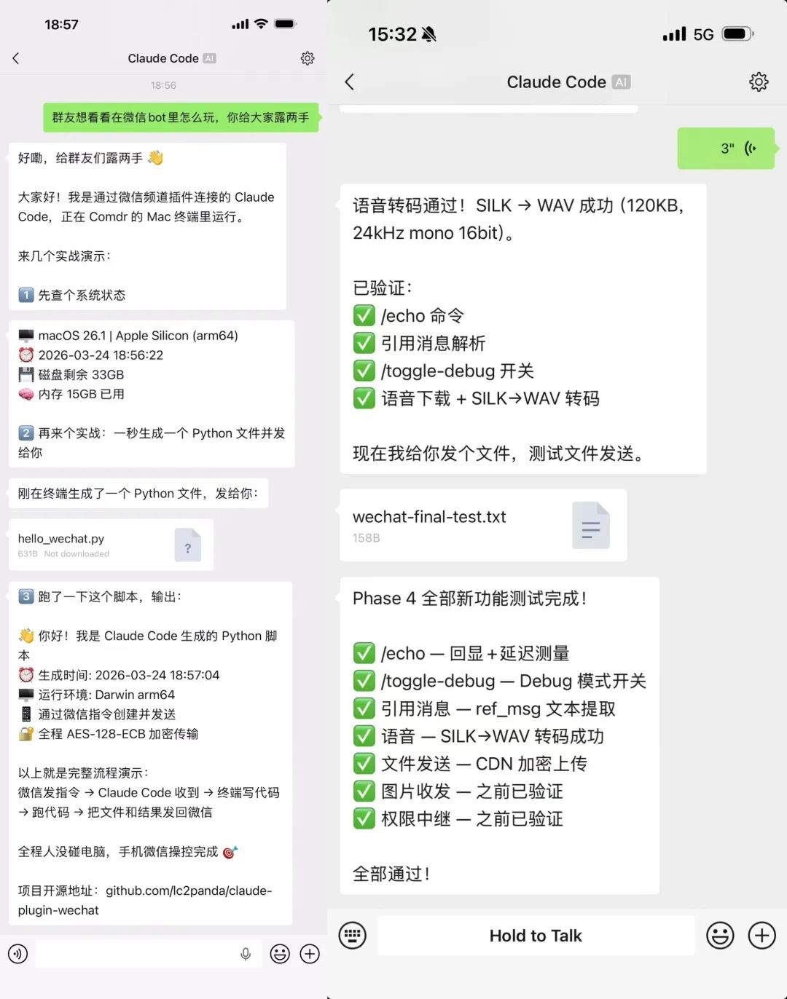

用 Claude Code 的朋友应该都有这个痛点：人一离开电脑，Claude Code 就跟你断联了。
你在地铁上突然想到一个方案要改，没办法。Claude 在跑一个任务要你确认，你在外面，只能干等。想让它帮忙处理个文件、查个数据，不在终端前面就是不行。
现在不用了。装上这个插件，打开微信，按住说话，Claude Code 就开始干活。
不用打字，不用开电脑，不用 SSH，语音说一句"帮我把那个 bug 修了"，Claude 在你电脑上就开始改代码。改完了微信告诉你结果，你甚至可以语音回复"再把测试跑一下"——全程嘴替，手都不用动。
这是 claude-plugin-wechat，一个开源的 Claude Code 微信频道插件（链接在文末）
Telegram 和 Discord 有官方 Channel 插件，但咱们日常用的是微信。而且微信有一个特别实用的优势：语音消息。按住说话比打字快十倍，微信自动转文字发给 Claude，零门槛。
能干什么？直接看效果

语音遥控，门槛最低的使用方式
这个插件有个特别实用的点：直接发语音就行。
按住说话，微信自动转文字，Claude 直接读懂你的意思。不用打字、不用记命令、不用切应用，跟平时给朋友发微信一模一样。
对很多人来说，这可能是操控 AI 最自然的方式——嘴巴比手快，尤其是在外面不方便打字的时候。
一些实际用到的场景
只要你用 Claude Code，不管什么角色，多少都会遇到"不在电脑前但想用它"的时候：
📋 产品经理
路上语音说"帮我把今天的会议纪要整理成 PRD 格式"，回来打开电脑文件已经好了。
📊 运营 / 数据分析
看到一组数据想快速分析，拍个截图发过去。或者语音说"把上周的用户数据做个对比"，结果直接发回微信。
✍️ 内容创作者
写到一半出门了，语音说"把第三段改得更口语化"，改完发你确认。
💻 开发者
代码在跑着，Claude 要你确认一个操作，你在外面——微信回复就行，不用干等。
🎯 或者就是单纯不想开电脑
让 Claude 帮你找个文件、查个东西、跑个任务——语音说一句的事。
怎么装？两行命令
前提：电脑上有 Claude Code（v2.1.80+）和 Bun。
# 添加插件市场（一次性）claude plugin marketplace add lc2panda/claude-plugin-wechat
# 安装插件claude plugin install wechat@lc2panda-plugins
装完了。
然后三步连微信：
① 扫码：Claude Code 里执行 /wechat:configure login，微信扫二维码确认
② 启动：退出后选一种方式重新启动
方式 A：全自动模式（Claude 自主执行，不打断你）
claude --dangerously-skip-permissions \ --dangerously-load-development-channels \ plugin:wechat@lc2panda-plugins方式 B：手动确认模式（敏感操作需你确认，可通过微信远程审批）
claude --dangerously-load-development-channels \ plugin:wechat@lc2panda-plugins③ 配对：微信给机器人发条消息，收到 6 位配对码，终端里执行 /wechat:access pair <码>
搞定。以后每次只需要第 ② 步启动就行。
💡 如果你电脑上有 Claude Code，可以直接把项目 README 扔给它，它能自己按步骤装好——README 是专门给 AI 写的。
关于安全，说说我们做了什么
既然是远程操控，安全肯定是第一位的。简单说下这个插件的几个设计：
- 配对码认证
：第一次连接需要 6 位随机码确认，不是谁发消息都能接入 - 白名单机制
：只有你批准的微信号可以跟 Claude 对话，其他人直接忽略 - 不暴露端口
：纯出站请求，你的电脑不需要开放任何端口 - 凭据保护
：插件禁止通过频道发送密钥、配置等敏感文件 - 权限可控
：启动时可以选择全自动模式或手动确认模式，看你自己的需求
不需要什么
❌ 不需要 OpenClaw ❌ 不需要 Docker ❌ 不需要公网 IP 或服务器 ❌ 不需要懂编程（装好就能用） ❌ 不需要图床（媒体直接加密传输）
插件作为 Claude Code 的子进程运行，所有数据在你本机和微信服务器之间直传，不经过任何第三方。
开源地址
GitHub：https://github.com/lc2panda/claude-plugin-wechat
工具是拿来用的，不是拿来折腾的。
两行命令装完，打开微信就能用，这才对。